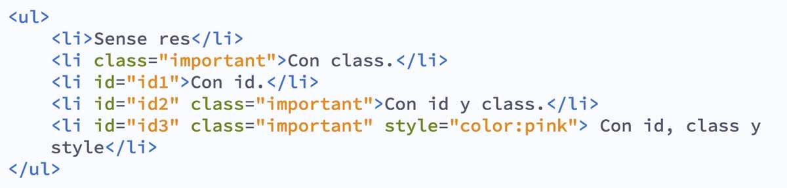

El proposito principal de este sitio web permite compartir informacion util sobre el diseño de paginas web, enfocado en los conceptos de Flex Box, de igual manera se estudiara sus Listas y enlaces en HTML
Flex Box

Flexbox es un módulo de diseño de CSS3 que se creó para mejorar la forma en la que se hace diseño responsive, evitando así el uso de float, escribiendo menos código y facilitando el posicionamiento de elementos, incluso no teniendo noción del tamaño de éstos. Básicamente la idea de Flexbox es poder alterar el ancho, alto y posicionamiento de elementos de la mejor manera con el espacio del que disponemos.
Estructura
La estructura de Flexbox se compone de contenedores padre e hijos (Contenedor-Flex y Elementos-Flex respectivamente)
El Contenedor-Flex es nuestro contenedor padre, y es él quién va a contener a todos los elementos hijos a los cuáles queremos posicionar.
El Elemento-Flex es nuestro elemento hijo, el cual utilizará todo el espacio disponible para ubicarse de acuerdo a las propiedades a las cuales este sometido junto a los demás Elementos-Flex contenidos.
Ejes: Cada diseño "Flexbox" está compuesto por dos ejes.
Un eje principal:
Que define el posicionamiento horizontal de los Elementos-Flex. Está definido por flex-direction, que posee cuatro posibles valores: row, row-reverse, column, column-reverse.
Si elegimos row o row-reverse, el eje principal correrá a lo largo de la fila según la dirección de la línea.
Al elegir column o column-reverse el eje principal correrá desde el borde superior de la página hasta el final — según la dirección del bloque.
Un eje secundario
que define el posicionamiento vertical de los Elementos-Flex.
Direcciones:
Las partes de inicio principal / fin principal e inicio secundario / fin secundario del Contenedor - Flex definen el origen y final del flujo de elementos - Flex.
Dimensiones:
Esto equivale a la anchura (tamaño principal) y la altura (tamaño secundario) del elemento - Flex que dependen de eje principal y eje secundario.
El Contendor-Flex:
contiene direcciones que definen el origen y el fin del flujo de Elementos-Flex:
Inicio principal, Fin principal, Inicio secundario, Fin secundario.
Cada Elemento-Flex está definido por sus dimensiones, anchura (tamaño principal) y altura (tamaño secundario) que dependen del eje principal y el eje secundario.
Propiedades del contenedor - flex (Padre)
Si queremos utilizar las propiedades de Flexbox tendremos que definirlo mediante la propiedad display y su valor flex o inline-flex dentro del selector que nosotros definamos que es nuestro elemento padre o Contenedor-Flex.
Propiedades del elemento padre con una breve descripción en cada una.
Flex-direction
Esta propiedad define las direcciones del eje principal, es decir, hacia donde se moverán los Elementos - Flex, tanto horizontalmente como verticalmente.
Flex-wrap
Al manejar Flexbox el concepto inicial es fijar los elementos - flex en una sola línea, pero con la propiedad flex-wrap controlamos si el contenedor flex mueve sus elementos - flex en líneas individuales o múltiples, es una de las cosas más asombrosas de FlexBox, ya que con una simple línea de código nos ahorramos muchos problemas.
Flex-flow
Esta propiedad flex-flow es una forma rápida o una opción de atajo para establecer las propiedades individuales flex-direction y flex-wrap.
Justify-content
La propiedad justify-content define cómo el navegador distribuye el espacio entre y alrededor de los items flex, a lo largo del eje principal de su contenedor.
El alineamiento se produce luego de que las longitudes y márgenes automáticos son aplicados, lo que significa que, si existe al menos un elemento flexible con flex-grow diferente a 0, no tendrá efecto ya que no habrá espacio disponible.
Pruebe con los siguientes valores dejustify-content en el ejemplo en vivo:
space-evenly, flex-start, flex-end, center, space-around, space-between.
Align-items
La propiedad align-items es muy similar a la propiedad justify-content, pero este es en la dirección del eje secundario.
El valor inicial para esta propiedad es stretch razón por la cual los ítems se ajustan por defecto a la altura de aquel más alto. En efecto se ajustan para llenar el contenedor flex — el ítem más alto define la altura de este.
En cambio, definimos align-items como flex-start para que los ítems se alineen al comienzo del contenedor flex, flex-end para alinearlos al final, o center para alinearlos al centro.
Intente esto en el ejemplo en vivo — He definido en el contenedor flex una altura para que se aprecie que se pueden mover libremente dentro del contenedor. Vea lo que sucede si se coloca el valor align-items como:
stretch, flex-start, flex-end, center.
Align-content
La propiedad align-content alinea las líneas de un contenedor - flex cuando los elementos no utilizan todo el espacio disponible en el eje secundario.
La propiedad align-content ajusta las líneas dentro de un contenedor flex cuando hay espacio extra en el eje transversal. Esta propiedad no tiene efecto en cajas flexibles de una sola línea.
Propiedades de los elementos - flex (Hijos)
Al igual que el contenedor - flex, los elementos - flex tienen propiedades interesantes, con las cuales podremos hacer cosas aún más increíbles.
Order
Con esta propiedad controlamos el orden de los elementos - flex que están dentro del contenedor - flex. Los elementos estarán dispuestos en orden ascendente según el valor de order. Los elementos con el mismo valor de order se dispondrán en el orden en el cual aparecen en el código fuente.
Flex-grow
Esta propiedad especifica el factor que determina hasta qué punto un elemento - flex crecerá en relación con el resto de los elementos - flex.
Flex-shrink
La propiedad flex-shrink especifica el factor de contracción de un flex item. Los flex items se encogerán para llenar el contenedor de acuerdo a su número flex-shrink, cuando el tamaño por defecto de los flex items sea mayor al de su contenedor flex container.
Flex-basis
Esta propiedad tiene los mismos valores que las propiedades width y height y especifica el tamaño principal del elemento - flex, distribuyéndose de acuerdo con los factores flex.
Flex
Con esta propiedad solo es la abreviatura de flex-grow, flex-shrink y flex-basis. Entre otros valores que también se pueden configurar para auto (1 1 auto) y none (0 0 auto ).
Align-self
Esta propiedad permite la alineación por defecto (o la especifica por align-items) para ser anulados por elementos - flex individuales.
listas y enlaces en HTML


Las listas en HTML nos permiten crear conjuntos de elementos en forma de lista dentro de una página, todos los cuales irán precedidos, generalmente, por un guion o número.
Los tipos de listas en HTML son los siguientes:
Listas Ordenadas
Si lo que pretendemos es definir una lista ordenada, lo tendremos que hacer entre las etiquetas <ol> (ol indica ordered list). Además, cada elemento de la lista se escribirá con la misma etiqueta que para las listas no ordenadas: <li >. Pero al ser listas ordenadas los símbolos por defecto serán números y éstos se irán generando automáticamente por orden, conforme escribamos nuevos elementos de la lista.
En las listas ordenadas podemos hacer que el primer punto comience con el número que nosotros queramos. Lo conseguiremos gracias al atributo “value”. Los siguientes puntos que escribamos se generarán automáticamente por orden, partiendo de ese número.
Un ejemplo de lista ordenada sería el siguiente:
- Julio
- Carmen
- Ignacio
- Elena
Listas no ordenadas
Las listas no ordenadas son aquellas que se encuentran entre las etiquetas <ul > (ul indica unordered list), etiqueta de apertura y cierre respectivamente. Si queremos añadir un nuevo punto, lo tendremos que hacer dentro de las etiquetas <li >. Si no le indicamos nada a la etiqueta <li >, la viñeta o marca que indica que se trata de un elemento de una lista se generará de forma automática. Pero si queremos definir nosotros mismo el símbolo del punto o marca a emplear, debemos indicarlo específicamente.
Una lista no ordenada se usa cuando se enumeran elementos sin que el orden tenga relevancia:
Un ejemplo de lista ordenada sería el siguiente:
En cambio, si la enumeración implica un orden se tratará de una lista ordenada.
LISTAS DE DEFICIONES O DE DESCRIPCIONES
Este tipo de listas no es de uso frecuente, por lo que vamos a citarlas solo por si encontramos este tipo de código en alguna página web poder interpretar su significado.
Las listas de definiciones se usan cuando queremos hacer una enumeración tipo “diccionario” donde tenemos varios términos y su definición o descripción. Para crear una lista de definiciones debemos usar las etiquetas <dl>, <dt > y <dd >.
Vamos a explicarlas por partes:
La etiqueta <dl > indica que dentro de ella va a ir una lista de definiciones o lista de descripciones.
La etiqueta <dt > indica que dentro de ella va un término que vamos a definir.
La etiqueta <dd >nos dice que dentro de ella se encuentra una definición o descripción asociada a un término.
Un término podría tener varias descripciones.
Por ejemplo, el término Autor podría tener como descripciones: Mateo Renzi, Olivo Pascua, Jorge Guillén.
ANIDAMIENTO O USO SIMULTÁNEO (COMBINACIÓN) DE VARIOS TIPOS DE LISTAS
Si lo deseamos, podemos combinar unos tipos de listas con otros. Por ejemplo, tener listas ordenadas dentro de cada elemento de una lista desordenada. Veamos un ejemplo. Escribe el siguiente código en un editor de texto como bloc de notas o Notepad++ y guárdalo con un nombre de archivo como ejemploCU00718B.html.
Enlaces en HTML
Lo que caracteriza a la web como medio de comunicación es la navegación por medio de hipervínculos (links o enlaces). Esta conexión entre archivos permite al usuario elegir el sentido de la navegación.
En el HTML los enlaces se marcan con la etiqueta <a > y el atributo principal es <href ="" >donde se escribe la ubicación del archivo de destino que puede estar en la misma carpeta que el archivo que lo está llamando, en otra carpeta del mismo sitio o en otro sitio web.
Entre las etiquetas <a href = "" a > se puede colocar cualquier elemento html que funcionará como botón, generalmente se coloca un texto o una imagen. Si es un texto, el navegador por defecto lo muestra en color azul y subrayado.
Rutas de enlaces:
Se llama ruta al valor que se escribe dentro del atributo <href="" > y se pueden clasificar en dos tipos:
Rutas absolutas:
Las rutas absolutas son las que definen la ubicación completa de un archivo en la web y empiezan desde https://nombredelsitio.com/archivo.html (el archivo de destino puede ser de cualquier extensión).
Por ejemplo, si queremos vincular nuestro sitio con Facebook, usaríamos una ruta absoluta y el código sería:
<a href="https://www.facebook.com/pagina"> Estamos en Facebook <a >
Rutas relativas:
Las rutas relativas en cambio definen la ubicación del archivo de destino en relación a la ubicación del archivo que lo está llamando.
Ejemplo: si el archivo index.html vincula con quien-soy.html y están en la misma carpeta, el código sería asi:
<a href="quien-soy.html"> >Quién soy <a >.
Tipos de enlaces
Enlaces internos entre archivos .html
Son los enlaces principales de un sitio. Si en el archivo index.html, queremos agregar un vínculo a contacto.html el código sería así:
<a href="contacto.html">Contáctenos <a >
El texto que queda encerrado entre las etiquetas <a >es lo que ve el usuario en color azul y subrayado.
Enlaces externos
Son los enlaces entre diferentes sitios web. Si queremos vincular un sitio web con otro, tenemos que indicar la ruta absoluta del sitio escribiendo la url completa que conviene copiarla del navegador.
En este caso, es común usar el atributo target="" que nos permite abrir el enlace en una pestaña nueva. Por ejemplo, si quisiera poner un vínculo a Instagram y que éste abra en pestaña nueva, sería así:
<href="https://www.instagram.com/laurachuburu/" target="_blank >Instagram <a >.
Enlaces internos: anclas
Las anclas son enlaces hacia un punto determinado dentro de un html. Se usa en varios casos, por ejemplo, en una página de preguntas frecuentes donde las respuestas están desarrolladas debajo de las preguntas, o en Wikipedia, cuando el texto es extenso el menú tiene vínculos con anclas. También en los textos largos, a la derecha de la pantalla generalmente se coloca un botón para subir. En los sitios de una sola página donde los botones en realidad hacen scroll, esas son anclas.
El punto de destino tiene que estar marcado con el atributo id="algo" y en el enlace se coloca un # (numeral) seguido del nombre.
Por ejemplo: <a href="#respuesta4> Pregunta 4 "> <a >"salta" a este párrafo: <p id"respuesta4">acá está escrita la respuesta> <p >
Enlaces para ampliar una imagen
Es común armar una galería de fotos con imágenes miniaturas que vinculan a imágenes ampliadas. Si combinamos este recurso con código javascript, logramos galerías de fotos muy atractivas.
El código HTML es así:
<a href="imagenes/foto1-ampliada.jpg"><img src="imagenes/foto1-miniatura.jpg" alt="descripción de la foto">, <a >
El navegador le muestra al usuario la foto miniatura y si cliquea en ella, le muestra la foto ampliada.
Enlaces para descargar archivos
En realidad, dentro del atributo href="" podemos colocar la ruta hacia cualquier tipo de archivo. Si el navegador reconoce la extensión, lo abre, por ejemplo: html, jpg, png, gif, svg, pdf, etc. Pero si no lo reconoce o es un archivo comprimido (.rar, .zip), el navegador le ofrece al usuario descargarlo. Ejemplo:
<a href="fotos.rar" >Descargá todas las fotos <a >.
Enlaces a una dirección de correo
Se puede vincular una dirección de correo para que abra en el programa de correo predeterminado.
El código se escribe así:
Consúltenos por mail a <a href="mailto:info@dominio.com" >info@dominio.com <a >.
Referencias:
Santillán, F (n.d) El gran poder de CSS3: FlexBox. 21. May.2015, from: https://filisantillan.com/blog/el-gran-poder-de-css3-flexbox/
Laura, C (n.d) Tipos de enlaces en HTML: COPYRIGHT © 2022 LAURA CHUBURU, from: https://laurachuburu.com.ar/tipos-de-enlaces-en-html/
Martínez pintor, J.A ( n.d) INTRODUCCION A HTML, febrero 28, 2015,from: https://sites.google.com/site/htmlintroduccion/listas-en-html
Juliana-amoasei, (n.d) Flexbox CSS: Guia Completo, Elementos y Ejemplos,02/09/2021, From: https://www.aluracursos.com/blog/flexbox-css-guia-completo-elementos-y-ejemplos
Mockup